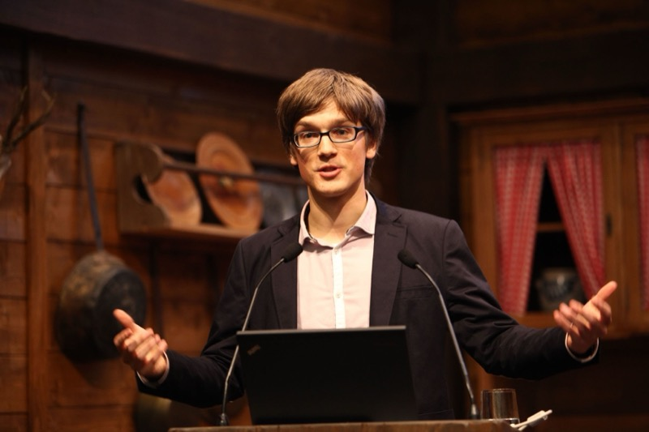
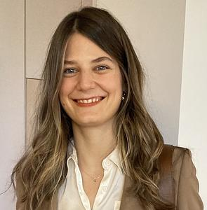
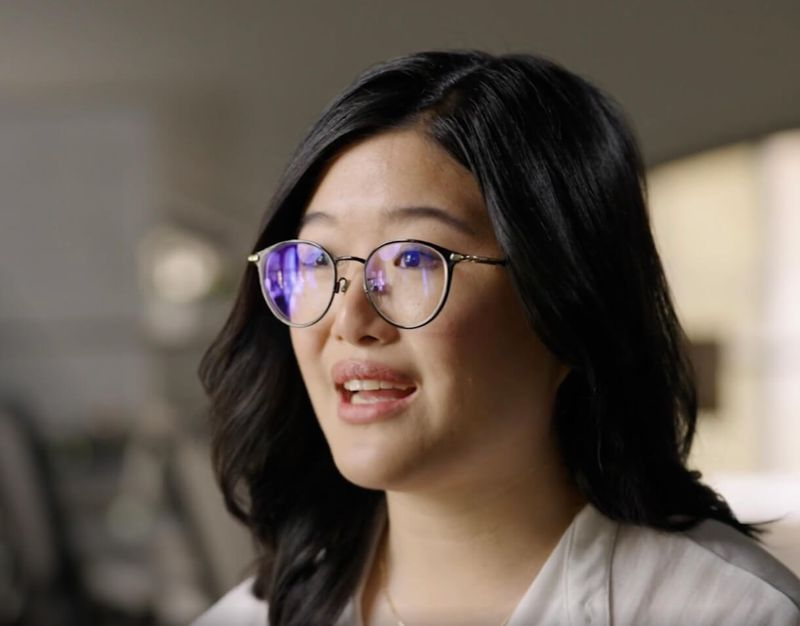
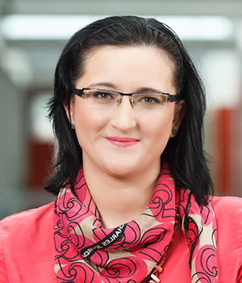
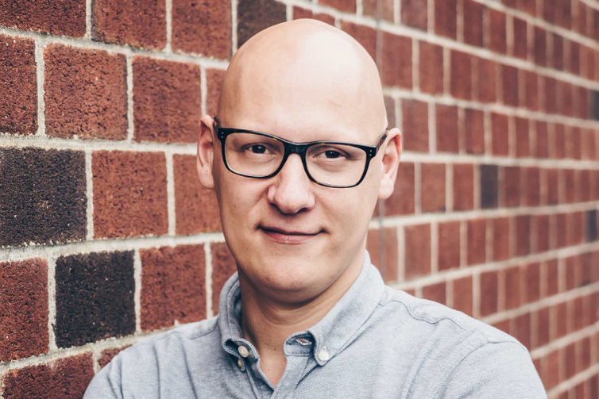

Invited speakers
Five 30-minute invited talks, balanced across frontier-LLM agent research, biology-specialized foundation models, industrial deployment, and the autonomous-laboratory frontier. All invited speakers are confirmed.

Jure Leskovec
Professor, Stanford University
Biomedical AI agents; knowledge graphs

Maria Brbić
Assistant Professor, EPFL
Foundation models & agents for cell biology
Heng Ji
Professor, UIUC
Agentic AI for science; LLM reasoning
Nathan Frey
Anthropic (prev. CTO & Co-Founder, Coefficient Bio)
Agentic AI for drug discovery

Michelle Lee
CEO & Founder, Medra AI
Physical-AI scientist; robotic closed-loop biology
Panelists
A 50-minute panel on the generalist-vs.-specialist debate and the “how to build” question.

Marinka Zitnik
Associate Professor, Harvard Medical School
Agentic AI for biology & medicine
Eli Carrami
Staff Research Scientist, Isomorphic Labs
AI for drug discovery (industry deployment)

Tommaso Biancalani
SVP, Generative Biology, Lila Sciences
Lab-in-the-loop AI; foundation models for biology

Le Cong
Assistant Professor, Stanford University
Agentic AI for gene-editing experiments